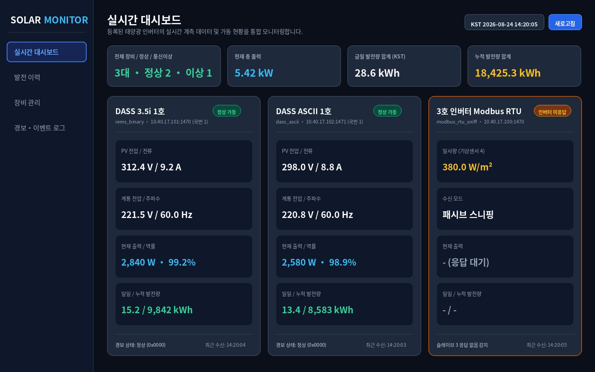
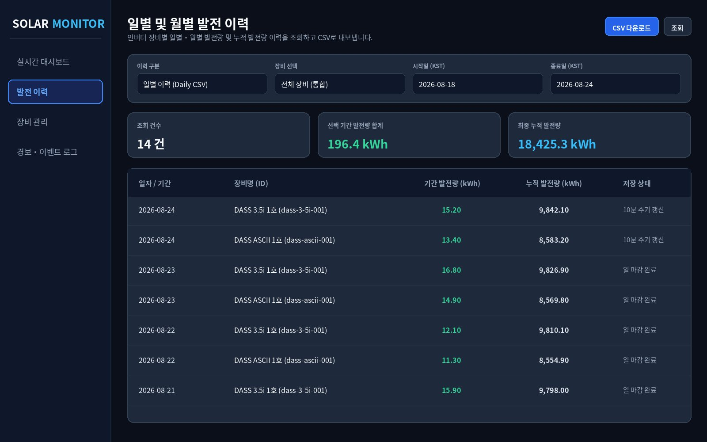
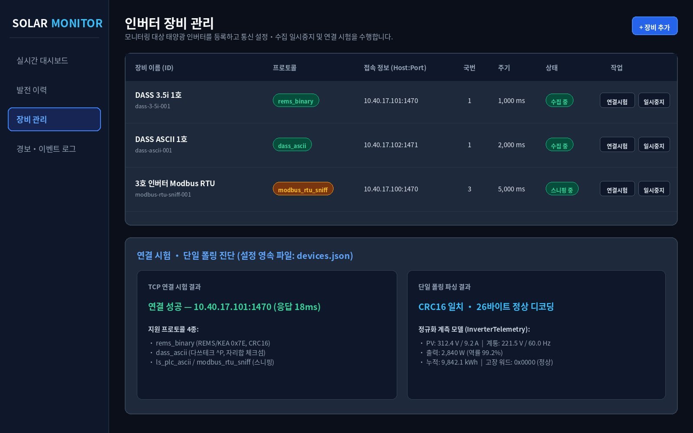
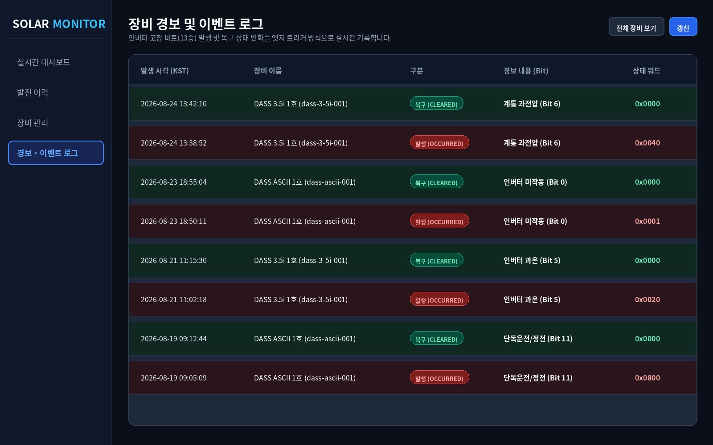

에너지 · 자동제어
태양광 인버터 통합 웹 모니터링 프로그램 구축
제조사와 통신 방식이 서로 다른 태양광 인버터(4종 프로토콜)를 웹 대시보드 하나에서 실시간으로 감시하고, 발전량을 자동으로 집계·저장하는 「SOLAR MONITOR」를 자체 개발했습니다.
- 4종지원 통신 프로토콜
- 13종고장 신호 실시간 경보
- 24건자동 단위시험 통과
- 3,900만 원SW개발비 절감(부가세 포함)








- 서로 다른 인버터를 한 화면에
- REMS 바이너리, 다쓰테크 ASCII, LS PLC ASCII, Modbus RTU 4종 프로토콜을 TCP 컨버터로 수집합니다. 장비별 폴링과 통신 엿듣기(패시브 스니핑)를 함께 지원하고, 기상센서 일사량도 읽습니다. 제조사별 전용 화면과 현장 계기를 일일이 돌아보던 방식을 대신합니다.
- 발전량 자동 집계
- 한국 시간 자정을 기준으로 일일 발전량을 자동 계산하고(이상값 보호), 일별·월별 이력을 CSV로 저장합니다. 인버터 누적값을 손으로 적어 계산하던 일을 없애고, 기간·장비별 이력을 웹에서 조회해 바로 내려받을 수 있습니다.
- 고장 경보와 이력
- 13종 고장 신호를 실시간으로 표시하고, 고장 발생과 복구 시각을 자동으로 기록합니다.
- 장비 관리와 통신 진단
- 웹 화면에서 장비를 등록·일시중지·재개하고, TCP 연결과 단일 폴링을 바로 시험합니다. 3호 인버터는 패킷 분석으로 기상센서는 정상이고 인버터가 응답하지 않는 원인을 찾아냈습니다.
- 접근 보안
- 허용한 IP만 접속할 수 있고(그 외 차단), 로그인 인증(12시간 유지)을 더해 이중으로 보호합니다.
- 향후 계획
- 현장 운영 PC에 배포하고 대상 인버터를 추가 연계합니다. 3호 인버터 통신을 복구한 뒤 응답 데이터 구조를 확정해 반영합니다.